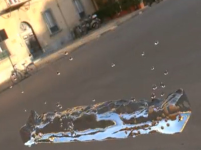

Physically-Based Rendering of Particle-Based Fluids with Light Transport Effects
3D Research, Springer, 2018
Dr. · ATER
University of Bordeaux
Laboratory LaBRI
My research focuses on physically-based rendering, with particular emphasis on particle-based fluids, point-based objects, and light transport effects. I develop efficient rendering techniques for complex 3D graphics systems.
Keywords: rendering, ray tracing, point-based graphics, fluid simulation, GPU acceleration

3D Research, Springer, 2018
Proceedings ISPS'2015, Alger, Algeria, 2015
Citations: 1
Proceedings ICMCS'2011, Ouarzazate, Morocco, 2011
LaBRI - Laboratoire Bordelais de Recherche en Informatique
University of Bordeaux
Talence, France